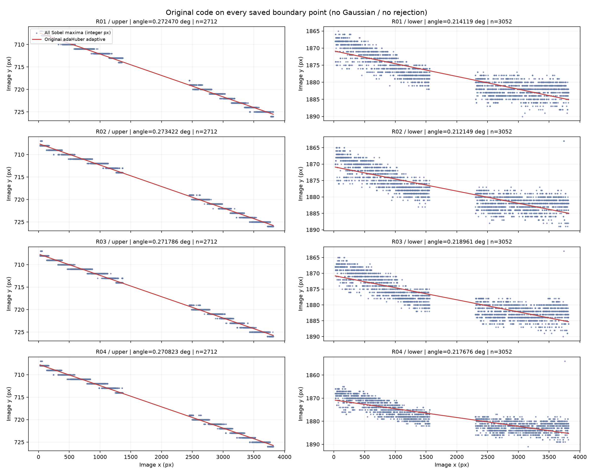
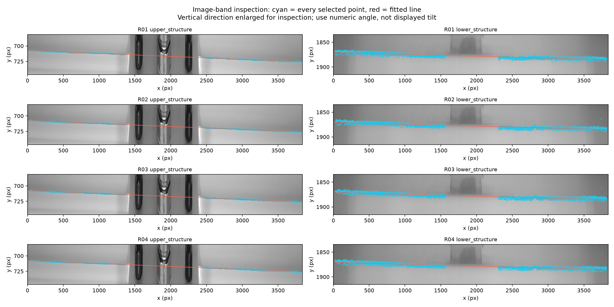

2026-11-01 · 기존 코드 채택 전 검증 · 결과 변경/선별 없음
공개 adaHuber 구현을
우리 경계점에 그대로 써도 되는가?
현재 4개 기준 영상의 8개 직선은 정상 계산됐다. 그러나 공개 코드 전체가 논문과 완전히 일치하거나 오류가 없는 것은 아니다.
이번 입력에서는 최종 가중치가 전부 1이라 일반 최소제곱과 사실상 같았다. “튀는 경계점의 영향을 줄이는 효과”가 이 입력에서 발생했다고 평가할 수 없다.
8 / 8실제 입력: 유한 계수 + 두 단계 종료 조건 충족
0 / 23,056최종 가중치가 감소한 실제 경계점
42개 입력실제 8개 + 수학·예외·분리 경로 시험 34개
1. 무엇을 실행했나
1차 center.bmp, 2차 center1.bmp·center2.bmp·center3.bmp에서 저장한 상단·하단의 정수 Sobel 최대점 (x, y)을 그대로 사용했다. 상단은 영상당 2,712개, 하단은 3,052개이다. 원본 영상 SHA-256을 확인하고 Sobel을 다시 계산했으며, 저장된 모든 점의 x·y·응답값과 완전히 같았다.
중앙 가림 구간을 제외한 좌우 가시 영역을 합쳐서 상단 1개·하단 1개의 직선을 계산했다. Gaussian, 2px 제외, 응답값 8 제외, Huber 뒤 재피팅은 넣지 않았다. 이번 검증은 기존 점의 생성 규칙을 바꾸는 작업이 아니다.
원본 adaHuberReg() C++ 함수와 호출되는 계산 함수를 수정 없이 컴파일했다. R이 설치되지 않은 환경이므로 R List 입출력만 JSON 연결 코드로 대체하고 실제 Armadillo 행렬 계산을 사용했다. R 패키지 전체를 실행한 것과는 구분한다. 원본과 진단 로그 삽입본의 반환값은 모든 시험에서 동일했다.
판정 기준은 코드가 정한 미분값 종료 조건(1e-4), 유한값 여부, 논문의 계산식 잔차, 알려진 수학적 성질이다. 별도의 px 합격선이나 성공 비율을 만들지 않았다. 좌표가 참 경계에 맞는지에 대한 절대 정확도는 정답 좌표가 없어 판정하지 않았다.
2. 실제 기준 데이터 결과
각도는 atan(m)이며 영상의 +x 방향과 이루는 선 각도이다. 기계 θ 보정량이 아니다. RMS는 입력 점과 추정 직선의 세로 거리이다. 상단 4개 각도의 최대–최소는 0.002599°, 하단은 0.006812°이며, 여기서 동등성·허용오차 통과 판정을 내리지 않았다.
상단 τ는 6.7425–7.1502px, 하단 τ는 46.6407–49.7899px로 각 입력의 모든 잔차보다 컸다. 따라서 최종 가중치는 모두 1이었다. 독립적으로 계산한 OLS 직선과의 위치 차이는 모든 관측 x에서 최대 2.36e-06px였다. 이것은 실제 경계 정답과의 오차가 아니라 두 계산 결과의 차이다.

원본 영상 위에서 선택점과 직선 보기
세로 방향을 확대했다. 그림상 보이는 기울기를 실제 각도로 읽으면 안 된다. 청록색: 입력 점 전체, 주황색: 최종 직선.

3. 논문과 코드 대조
Wang et al. (2021) 최종 출판본의 식 (2.11), (3.2), (3.6), (3.7), 3.2절과 보충자료를 확인했다. 2020년 Adaptive Huber 논문도 확인했지만 현재 공개 코드의 데이터 기반 τ 갱신 근거는 2021년 논문이다. 2021년 출판본 p.2175에서도 이 저장소를 직접 안내한다.
따라서 “논문을 그대로 구현했다”는 설명은 부정확하다. 핵심 손실과 τ 방정식은 대응하지만 초기화·계산 방법·최종 절편 처리·수치 종료값에는 차이가 있다. 특히 method="adaptive"는 논문의 두 방식을 결합한 결과여서 one-step의 이론을 그대로 붙일 수 없다.
4. 코드 점검에서 나온 사항
A01 · adaptive가 논문의 one-step 또는 two-step을 그대로 반환하지 않음
선택 경로 · 추정량 불일치 · 원본 226–268
식 (3.6) 기반 기울기 뒤에 식 (3.7)의 절편 재추정이 붙는다. 오염된 정규표본 시험에서 마지막 교체 전 미분 최대값은 7.94e-5, 반환 후 동일 τ로 재평가하면 0.0159864였다. 반환 τ는 절편 단계 τ=5.26128이 아니라 앞 단계 τ=4.46261이다.
숫자 오류와 별도로, 이 결과를 논문의 one-step 추정량이라고 부를 수 없다. 현재 실제 8개에서는 OLS와 같아 이 차이의 영향이 작다.
재현 입력: regression_normal_contaminated
A02 · 스칼라 보폭 식의 괄호 누락으로 보이는 부분
선택 경로의 절편 함수 · 수식 불일치·영향 재현 · 원본 83–86, 120–123
huberMean과 huberMeanList의 a1=cross/derDiff*derDiff는 연산 순서상 cross와 같다. 같은 파일의 벡터식 a1=cross/(gradDiffᵀgradDiff)를 1차원으로 줄인 식과 다르다. 괄호만 고친 진단 복사본에서 lognormal 20점 시험의 반환 counter가 13→5, μ가 2.510059594→2.509990608로 변했다.
저자의 의도는 확인하지 않았다. 두 결과 모두 각자의 종료 조건을 만족했으므로 이것만으로 원본의 모든 출력이 틀렸다고 판정하지 않는다. 실제 8개는 이 while에 진입하지 않아 원본/진단 결과가 같았다.
재현 입력: mean_lognormal_20
A03 · 절대 종료값 때문에 단위 축소 시 방정식이 충분히 풀리지 않음
선택 경로의 수치 계산 · 수치적 한계 재현 · 원본 18–29, 226–268
[0,0,0.001] 평균 시험에서 τ² 구간 폭이 이미 0.001보다 작아 이분법을 한 번도 수행하지 않았다. τ 방정식 잔차는 0.157605였지만 반환됐다. noisy_line의 세로 좌표를 0.001배 한 뒤 기울기를 원단위로 복원하면 0.492515094, 원본은 0.498115381이다.
현재 px 단위 8개 입력의 정상 종료와는 별개인 스케일 의존성이다. 자동으로 수치 설정을 교체하지 않았다.
재현 입력: mean_small_range / noisy_line_scale_0.001
A04 · 상수 가로 좌표의 0 표준편차를 검사하지 않음
선택 경로의 입력 처리 · 예외 처리 부족 재현 · 원본 231–235; R adaHuber.reg
X가 모두 같은 값이면 표준화에서 0으로 나눠 계수·τ가 NaN이 되지만 결과 구조와 iteration=1을 반환한다. R 진입 함수도 행·열 개수만 검사하므로 상수 X는 차단하지 않는다.
실제 8개에는 해당하지 않는다. n=1 회귀도 C++ 직접 호출에서는 실패하지만 R 함수는 n≤p를 차단하므로 이를 R 인터페이스 결함으로 세지 않았다.
재현 입력: constant_x
A05 · 반복 제한 종료와 수렴, 절편 단계 상태가 반환값에서 구분되지 않음
선택 경로의 반환 정보 · 상태 정보 부족 · 원본 247–268
계수·τ·counter만 반환한다. cap=0 시험은 미분값 0.00648978(1e-4보다 큼)인 채 결과를 반환한다. 절편 함수의 반복 횟수와 종료 사유도 최종 회귀 결과에 전달하지 않는다.
값을 반환했다는 사실만으로 성공 처리하면 안 된다. 이번 보고서는 삽입 관측 로그로 각 단계의 실제 미분값을 검사했다.
재현 입력: iteration_cap_0
B01 · 잔차를 계산한 뒤 τ에는 원 응답의 제곱을 넣음
선택하지 않은 Lasso 경로 · 오류 재현 · 원본 457–461, 490–494, 544–548
adaHuberLasso, adaHuberLassoList, cvAdaHuberLasso에서 res=Y-Zβ 직후 resSq=square(Y)를 사용한다. 진단 시험에서 해당 식만 residual로 바꾸면 τ가 15.254213→0.377832로 바뀐다.
이번 저차원 직선 결과에는 영향 없음. 패키지 전체를 무오류라고 할 수 없는 근거이다.
재현 입력: lasso_residual_probe
B02 · 상수열 공분산 대각값을 0으로 만들지 못함
선택하지 않은 공분산 경로 · 정답이 있는 반례 재현 · 원본 177–182
두 열이 각각 모두 5와 7이면 분산은 0이다. 원본 huberCov는 대각값 [25,49]를 반환했다. theta>평균²일 때만 평균²를 빼는 분기 때문이며 같을 때는 원래 제곱평균을 그대로 남긴다.
이번 직선에는 영향 없음. 공분산 기능은 별도 오류가 있다.
재현 입력: cov_constant
5. 재현 방법과 검증 범위
공개 저장소 고정 커밋: b3130d4d9d905b7d339039c61dbfe52f5e7011ae. 원본 파일의 다운로드 직후 해시와 최종 해시가 같다. 기존 프로젝트 코드·설정·이미지는 수정하지 않았다.
fetch_sources.py: 고정 커밋의 코드와 빌드용 헤더를 확보한다. 출판사 PDF는 Windows curl로 별도 확보했다.prepare_build.py: 원본과 관측용 복사본, 원인 확인용 복사본을 구분한다. generated/*.diff에서 모든 차이를 확인할 수 있다.CMakeLists.txt: C++17/MSVC 19.51, Armadillo 헤더 계산으로 실행 파일을 만든다. R·패키지를 시스템에 설치하지 않았다.run_validation.py: 원본 영상·입력 확인 → 42개 고정 시험 → 원본/관측본 일치 검사 → 단계별 수치 기록.make_report.py: 모든 입력 점 그래프, OLS 대조, 보고서를 만든다.
진단 복사본은 원인을 확인하기 위한 비교 대상이며 현재 데이터 결과 표에는 원본 결과만 썼다. 괄호 보완을 기존 알고리즘에 적용하거나, 설정을 최적화하거나, 방법을 자동 교체하지 않았다.
함수 전체 점검 목록과 실제 실행 범위
원본 계산 소스 559줄과 R 진입 코드·생성된 호출 코드를 읽었다. 각 함수의 실행 여부는 아래와 같다. 모든 가능한 입력·실행 경로를 다 테스트했다는 의미가 아니다. 공분산·고차원 회귀의 모든 이론/예측 성능을 검증한 것도 아니다.
실제 영상 외 34개 시험의 원본 반환값
수학적 성질 및 예외 재현용 합성 입력이다. 학습용 증강 데이터가 아니다. JSON의 null은 NaN/비유한값을 표현한다. n=1 회귀는 R 진입부가 차단하지만, 직접 C++ 핵심 함수를 호출한 시험에는 포함했다.
6. 이번에 내릴 수 있는 판단
이 8개 입력에 대한 수치 계산은 정상 종료했다. 실제 영상 경계의 정답 정확도나 θ 보정 성공은 이번 검증의 결론이 아니다.
공개 구현 전체를 검증된 무오류 기준으로 바로 채택하는 것은 권하지 않는다. 논문과 다른 최종 추정량, 절편 계산식 불일치, 입력·종료 처리 한계를 먼저 구분해야 한다. 또한 이 설정에서는 우리 입력의 어느 점도 최종적으로 약하게 반영되지 않았으므로, 원하는 이상점 완화 효과가 얻어졌다고 볼 수 없다.
근거·산출물